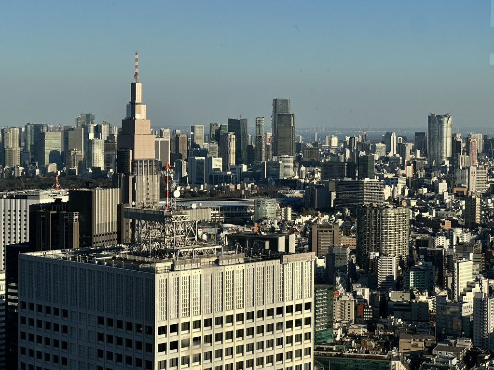

Tokyo, Japans capital and largest city is a bustling metropolis with 13 million people living in its Located in the Kanto region of Japan, Tokyo is known as the “Edo” city on the banks of Sumida River and is often referred to as the “City of the rising sun" it is the perfect palce for people to work and study" Tokyo's rich history, modern infrastructure, and diverse culture make it an ideal destination for both work and study. Its efficient public transportation system, world-class universities, and thriving business environment offer unparalleled opportunities for personal and professional growth. Whether pursuing career ambitions or academic pursuits, Tokyo's vibrant energy fuels success.
Shinjuku: Heart of tokyoShinjuku, a bustling district in Tokyo, offers a vibrant atmosphere for both work and study. With its towering skyscrapers housing multinational corporations, Shinjuku provides a dynamic hub for professionals seeking career opportunities in various industries. Additionally, the presence of prestigious universities and language schools caters to students aspiring to expand their knowledge and skills. Amidst the bustling streets and neon-lit alleys, coworking spaces and libraries offer conducive environments for focused work and study sessions. Whether navigating the corporate world or delving into academia, Shinjuku's energy and resources provide an inspiring backdrop for personal and professional growth. |
 |